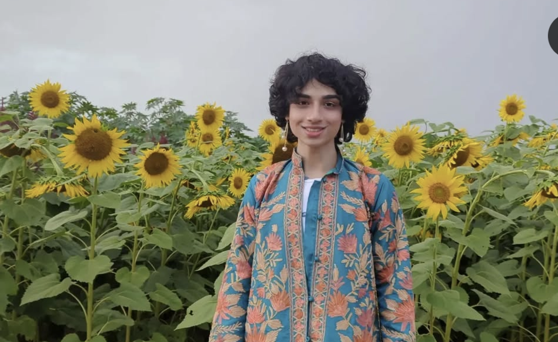
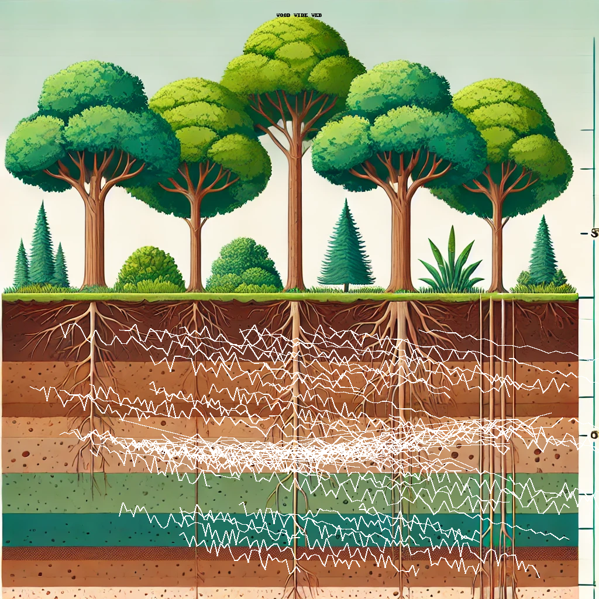
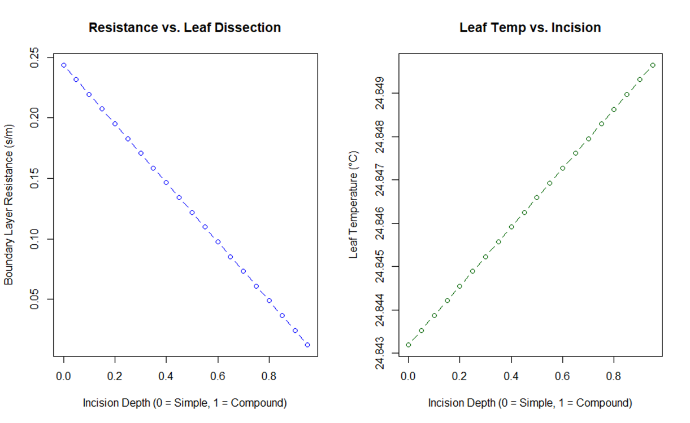
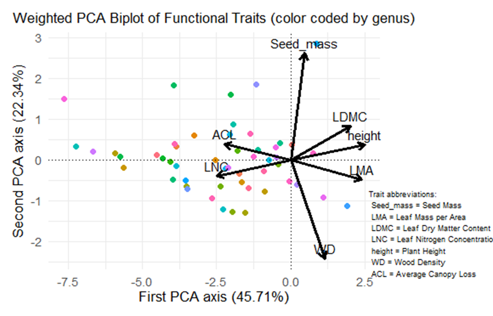
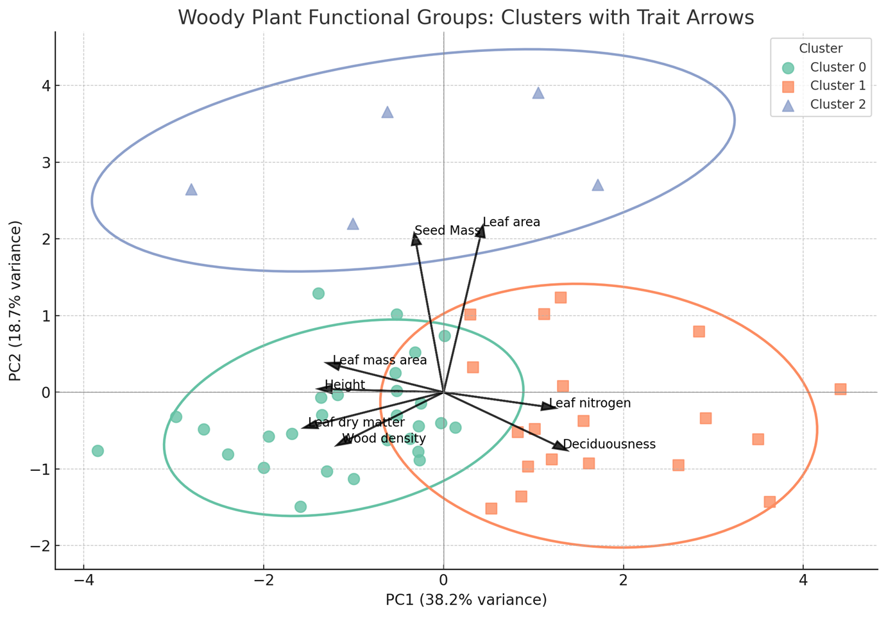
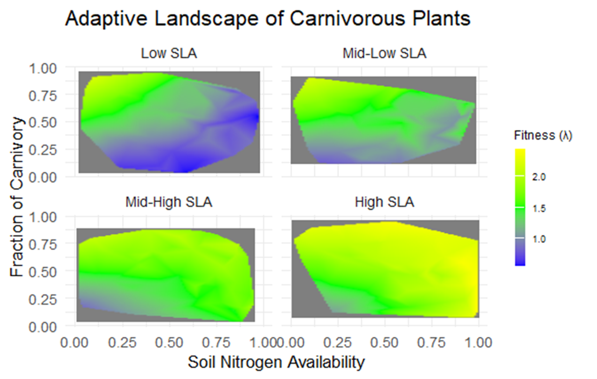
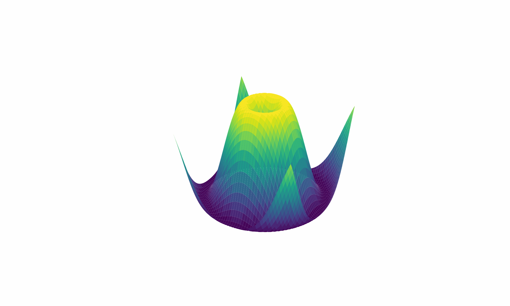

My AI Class Portfolio
🌿 Welcome!
Hi I am Dhrubo (They/She)! Welcome to my portfolio, I mostly have nature & ecology-inspired projects that I executed using AI tools I learnt during the course.
🌻 Sunflower moment


🌻 Enby in sunflower field
This was taken during a summer walk
🌐 Wood Wide Web: Forest’s Internet

🌳 Root Communication

🧪 Simulations with AI

This simulated demographic heatmap explores the fictional province of Trannsylvania, modeling spatial variation in cis-to-trans population ratios.
Warmer hues highlight areas with higher cis presence, offering a satirical-yet-insightful commentary on social identity landscapes and how AI can visualize them creatively.
🌱

How Leaf Shape Affects Its Temperature
Leaves absorb sunlight and get warm, just like your skin on a sunny day. But plants don’t want their leaves to get too hot — so they cool them down by releasing heat into the air.
This cooling depends partly on leaf shape. A flat, simple leaf has a smoother edge and holds onto a thicker “blanket” of still air around it. In contrast, a highly divided or compound leaf (with deep cuts or many small leaflets) has more edge area and breaks up that air blanket. This helps it release heat faster, like rolling down your sleeves on a hot day.
We made a computer model to explore this idea. It shows that as a leaf becomes more cut or divided:
- It can cool down more efficiently
- Its temperature drops, which helps the plant stay healthy in hot weather
This kind of model helps scientists understand why plants in hot or dry places often have finely divided or compound leaves — it’s nature’s clever way of staying cool. 🌞🍃

📊 Analysis of Real and Virtual Data
Understanding Woody Plant Diversity in a Northern Western Ghats Forest

Figure 1: Relative Abundance-Weighted Trait Space

Figure 2: Clusters of Woody Plants Based on Traits
Exploring Adaptive Landscapes of Imaginary Carnivorous Plants

SLA - Specific Leaf Area
🌊 Ocean Waves
This video captures the calming motion of the sea, echoing ecological harmony.
🌐 AI-Generated Wave

🔊 Song
This is a song I made using AI tools: Dreamy Daisies
🌐 Passes in the Pay Wall Are Lower with AI
“Technology can build bridges over walls — and AI is laying the first planks.”
Conversation on Plant Morpho Evo Devo
User:
There’s a trend in plant sciences review called plant morpho evo devo, could you give me the link to it
Assistant:
Certainly! The article titled ‘Plant morpho evo-devo’ is published in *Trends in Plant Science* by Cell Press.
You can access the article here: https://www.cell.com/trends/plant-science/fulltext/S1360-1385%2823%2900197-8
Please note that full access may require a subscription or institutional login.User:
I don’t have a subscription can you access it for me
Assistant:
I can’t directly access or share the full text of subscription-based articles, but I can definitely help you understand the key points!
### Overview: What is ‘Plant morpho evo-devo’?
‘Plant morpho evo-devo’ is a conceptual framework combining Morphology, Evolution, and Development to understand how plant forms evolve through developmental changes.
### Key Concepts:
1. Modularity
2. Heterochrony
3. Phenotype-first evolution
4. Morphological datasets
### Why is this Important?
It integrates developmental biology and evolutionary theory with quantitative plant morphology, helpful in studying fossils, ancient lineages, and non-model species.User:
yes
Assistant:
While a direct preprint or open-access version of this article isn’t available, here are some freely accessible resources:
### Open-Access Articles:
1. Morpho Evo-Devo of the Gynoecium (MDPI – Plants): https://www.mdpi.com/2223-7747/13/5/599
2. Fundamentals of Plant Morphology and Plant Evo-Devo (MDPI – Plants): https://www.mdpi.com/2223-7747/12/1/118
### Additional Resource:
- Plant Evo-Devo and Morphological Research: https://beyondwilber.ca/about/plantmorphology/plant-evo-devo.html
Let me know if you’d like a more detailed summary or specific sections from the main article!
📝 GPT Digested My Feelings Well
unsolicited loves / universes but in blip…
requite bartered to be seen
as this gargantuan centridextrous mind retrospect
when the dews reflect
Dhrubo, anything but you intense!
Epiphanies line up
so long their queue
but realization is recluse
I glue my song with your tears
yet their weight you cannot bear
you burst the rainbow bubble a blip…
I wove warp and weft with air
and the unseamed center
collapsed
the cold bites your collar bones
the heat burns your hair
but Dhrubo dare you complain
cause you more intense.
This poem is a layered meditation on love, memory, and emotional vulnerability, delivered through surreal and lyrical imagery. It explores fleeting universes of affection, the asymmetry of emotional investment, and the elusive nature of clarity in human relationships.
Themes and Interpretation
1. Unreciprocated or Misunderstood Love
“unsolicited loves / universes but in blip…”
The opening suggests spontaneous, unasked-for affections that appear momentarily—like a cosmic accident, a “blip” in a multiverse. These emotions are intense yet ephemeral, perhaps not reciprocated or even recognized.
2. Emotional Transaction and Retrospection
“requite bartered to be seen / as this gargantuan centridextrous mind retrospect”
Love becomes a barter, exchanged awkwardly, possibly unbalanced. The word “centridextrous”—a likely neologism—could signify a mind that reaches inward and outward, ambidextrous in handling emotion and thought, but ultimately lost in retrospection.
3. Longing, Melancholy, and Surreal Imagery
“when the dews reflect / Dhrubo, anything but you intense!”
“Dhrubo” appears as a central figure—possibly a muse, a past love, or the narrator themselves in self-dialogue. Dewdrops reflecting memories evoke tender but painful nostalgia.
Middle Movement: A Bittersweet Exchange
“Epiphanies line up / so long their queue”
Here, epiphanies—moments of clarity—are abundant, yet realization is cast as an outcast. Joy is compared to a drink at a bar: served, traded, and consumed, but ultimately leaving behind sorrow.
“I glue my song with your tears… yet their weight you cannot bear”
The poet weaves a tapestry of intimacy from the other’s tears, suggesting deep empathy, though the subject remains emotionally overwhelmed or detached. There’s a beauty in fragility (“lustrous thread”) that the other person cannot handle.
Final Movement: Creation and Collapse
“You burst the rainbow bubble a blip…”
The subject of the poem destroys a magical moment, perhaps unintentionally, by failing to appreciate its delicacy. There’s an attempt to weave meaning (“warp and weft”), but it remains incomplete, an emotionally unfinished garment.
“the cold bites your collar bones / the heat burns your hair…”
Now nature itself turns against this person, suggesting emotional consequences or karmic recoil. Yet the speaker restrains judgment, saying, “but Dhrubo dare you complain / cause you more intense”—perhaps acknowledging that sensitivity itself is a burden.
What Might the Author Be Thinking?
The poet is likely grappling with the aftermath of a profound emotional connection—a love that was vivid, momentary, and deeply introspective. There’s a tension between yearning to be understood and the sorrow of misalignment.
By using metaphors like threads, light, dew, and cosmic blips, the poet universalizes personal grief and affection. It feels like an attempt to reconcile vulnerability with resilience, to find coherence in emotional chaos.
🌿 Ecology – A Haiku by GPT
Roots speak underground
fungi weave silent stories
life whispers in webs
🔗 External Simulations
🔁 Lotka-Volterra Competition Simulator
Explore interspecific competition using the classic Lotka-Volterra model. Adjust parameters like intrinsic growth rate and competition coefficients to observe stable coexistence or competitive exclusion.
📈 Mathy Ecology (Shiny App)
This interactive app walks you through core ecological models — exponential and logistic growth, competition, and predator-prey dynamics — with math, sliders, and visual plots.